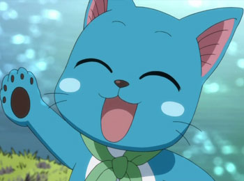

Présentation des personnages
Comme toute guilde qui se respecte, Fairy Tail est composée de plusieurs magiciens. Ces magiciens ont tous une spécialisation dans le domaine de la magie. Invocation d'armes ou d'esprits, magie de création ou encore maitrise d'un élément, vous trouverez certainement votre bonheur à Fairy Tail ^^!
| Photo | Description |
|---|---|
 |
Natsu Dragnir |
En tant que chasseur de dragon du feu, Natsu maîtrise diverses techniques faisant appel à l'élément du feu. il est immunisé à cet élément, pouvant même manger les flammes générées par d'autres sources de feu ou les explosions. De plus, depuis que Luxus lui a confié son pouvoir, il peut augmenter sa puissance en utilisant des techniques de feu et de foudre, mais ce mode l'épuise rapidement. |
|
|  | Happy |
Happy est un chat bleu d'une race de chats, nommée Exceed et originaire d'Edolas, un monde parallèle à l'univers d'Earthland. Alors qu'il n'était qu'un œuf, il fut envoyé sur Earthland dans le but d'exterminer les chasseurs de dragon de ce monde, c'est à ce moment qu'il fut recueilli par Natsu et Lisana. |
|
| Lucy Heartfilia | |
Lucy est une constellationiste (mage céleste), c'est-à-dire une mage « invocatrice ». Ce statut de mage lui permet d'ouvrir des portes pour faire appel aux esprits célestes (correspondant à chacune des 88 constellations) par l'intermédiaire de clés. Ses clés les plus puissantes sont les clés d'or du zodiaque, au nombre de treize, elles correspondent chacune à un signe astrologique en y ajoutant le serpentaire. |